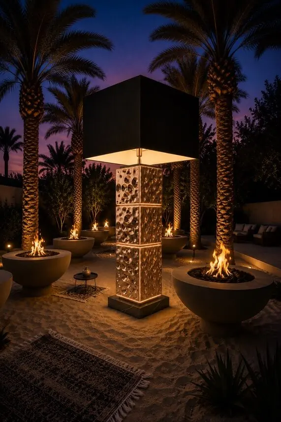
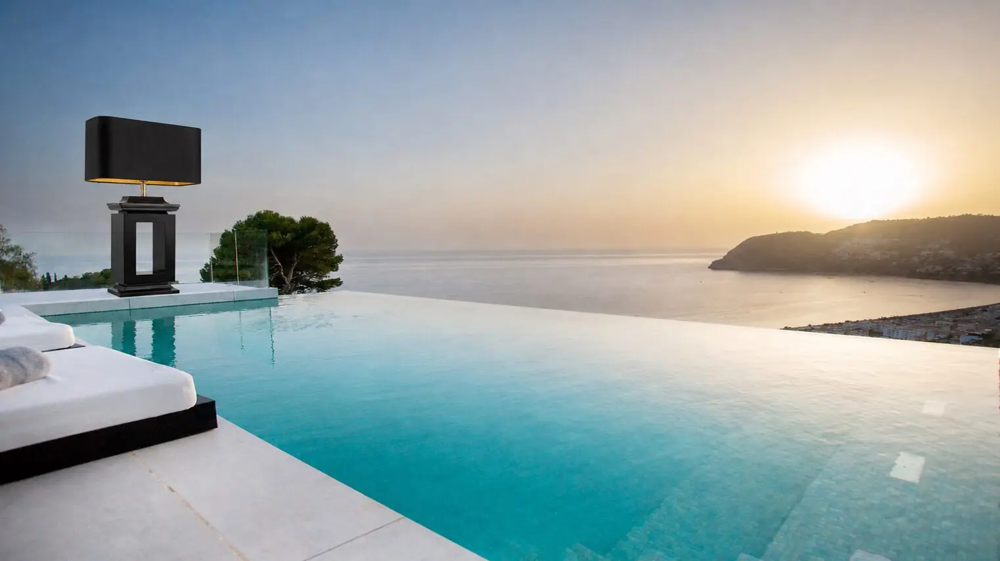

L'Atelier
Rêver grand
Atelier Azar, un nom qui laisse planer le mystère sur ce qui se cache réellement derrière lui.
Car le hasard n'existe pas… il se provoque, il se construit, il se crée.
Né à Dakar, au Sénégal, en 1978, Pascal Pupillo grandit entre les cultures, les voyages et les influences du monde. Très jeune déjà, il développe une fascination profonde pour l'architecture, les volumes et les atmosphères hors normes. Depuis l'enfance, une idée ne l'a jamais quitté : rêver grand.

Le monde comme atelier
De Swissair à l'Asie
Son parcours débute dans l'aviation, auprès de la compagnie Swissair, une expérience qui renforce encore son ouverture au monde. Londres, puis l'Asie, à travers d'innombrables voyages en Thaïlande, en Chine, au Japon, en Corée, en Indonésie, aux Philippines et aux États-Unis, deviennent des terrains d'inspiration permanents.
Chaque destination nourrit son regard, affine sa sensibilité et façonne peu à peu un univers artistique singulier, entre minimalisme architectural, luxe contemporain et émotion lumineuse.

Genève, 2025
La naissance d'Atelier Azar
Pendant plus de 25 ans, Pascal Pupillo évolue dans l'événementiel à Genève avec sa société Red Zone, où il imagine des expériences visuelles immersives et spectaculaires. Mais derrière cette aventure, un rêve plus profond continuait de grandir : créer des œuvres monumentales, des lampes géantes et des objets hors échelle capables de transformer un lieu en émotion.
C'est ainsi qu'est né Atelier Azar, en 2025.
Une signature
La lumière devient sculpture, les matières dialoguent avec l'architecture, et chaque création cherche à provoquer un sentiment de puissance, de sérénité et d'émerveillement.
Méditerranée
La lumière du soir
Terrasses, pierre chaude et horizons marins : des pièces pensées pour la douceur des fins de journée.
Asie
Le sens des volumes
Lignes de pagode, laques et proportions architecturales, rapportées de longues années de voyages.
Minimalisme
Des présences
Des objets qui dépassent la simple fonction décorative pour habiter les espaces avec caractère et émotion.
Un luxe différent : émotionnel, intemporel et profondément expérientiel.
Un projet, pas à pas
Pour une villa, un hôtel, un yacht club ou un événement.
Rencontre
Votre lieu, vos volumes, l'émotion recherchée. Choix du modèle, de la taille et de la finition.
Film de projection
Un film IA de la lampe dans votre espace, pour valider l'échelle et la lumière.
Création
Fabrication de la pièce, abat-jour et éclairage LED sur mesure.
Installation
Livraison et mise en lumière sur place, en intérieur comme en extérieur.
Commençons par votre lieu
Une première conversation suffit pour choisir le modèle et l'échelle.